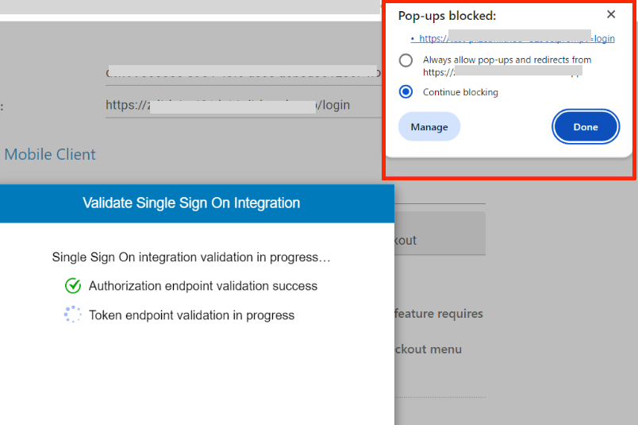
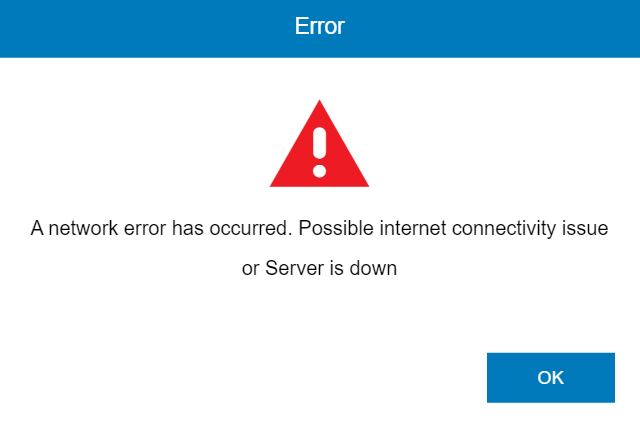
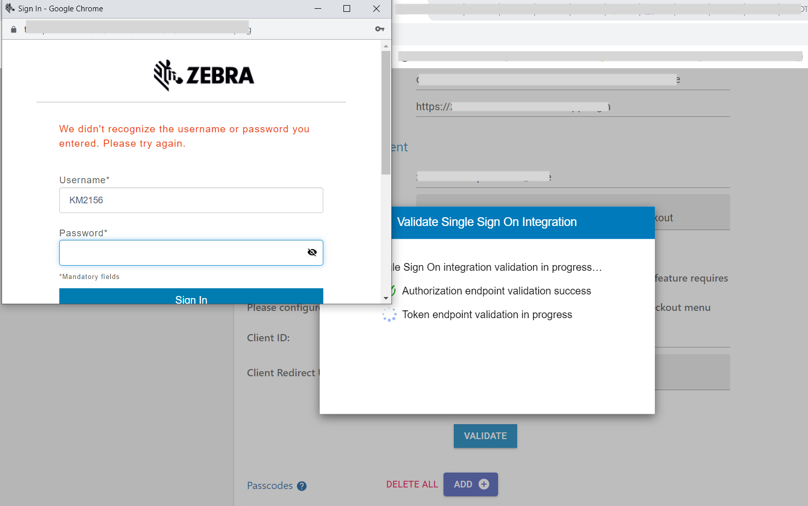
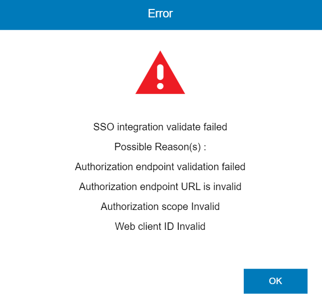

All references to Device Guardian also apply to Device Guardian Access Management within this guide.
Setup Questions
• Why can’t I access the Device Guardian web portal within my corporate network?
Your firewall/proxy may be blocking a required URL. Contact your IT administrator to verify that the required URLs from the network requirements are opened in your firewall/proxy. You can cross-check this by accessing the URL in a network that is not within the firewall or proxy. This helps to identify whether it is a firewall/proxy issue.
• Why are many domains required to be allowed through my firewall or proxy? What are they used for?
The specified domains must be allowed through the firewall or proxy for Device Guardian to operate:
connectivitycheck.gstatic.com(Required for Android to check internet connectivity.)www.googleapis.com(Required for Device Guardian to authenticate device communication with the cloud server.)firestore.googleapis.com(Required for Device Guardian to access the cloud database.)cloudfunctions.googleapis.com(Required for Device Guardian to connect with the cloud server.)*.cloudfunctions.net(Required for Device Guardian to access the cloud server.)us-central1-[ProjectID].cloudfunctions.net(Required for Device Guardian to connect with the cloud server, where[ProjectID]is supplied by Zebra during onboarding.)[ProjectID].firebaseio.com(Required for Device Guardian to access the cloud database, where[ProjectID]is supplied by Zebra during onboarding.)[ProjectID]-default-rtdb.firebaseio.com(Required for Device Guardian to access the cloud database, where[ProjectID]is supplied by Zebra during onboarding.)*.firebaseio.com(Required for Device Guardian to access the cloud database, where*represents multiple characters that changes dynamically over time.)[ProjectID].firebaseapp.com(Required for accessing password reset link, where[ProjectID]is supplied by Zebra during onboarding.)[Web portal URL](Required to access the Device Guardian web portal, supplied by Zebra during onboarding.)
See Network Requirements.
• Why do I get a license error “Checking licenses”?
Login to the Device Guardian web portal and verify the available license count from the License Summary. If you purchased a license and the available license count shows as zero, click Sync Licenses in the web portal. If the issue persists, contact Zebra Technical Support.
Email Questions
• Why didn't I receive the password reset email?
The password reset is sent from the email address zdtrksupport@zebra.com. Contact your IT administrator check if you are permitted to receive an email from this email address.
• Why am I unable to receive daily End of Day reports?
Make sure End of Day reporting is enabled and the email ID is configured properly. End of Day reports are sent from email address zdtrksupport@zebra.com. Contact your IT administrator to check if the email address, user ID and attachments are being blocked by your email or proxy server.
Device Questions
• Why does Device Guardian on my device display the error “Server not configured”?
Wi-Fi must be enabled and the server connectivity settings (provided by Zebra Services during onboarding) must be deployed on the device. Refer to Device Guardian installation instructions.
• Why can’t the device connect to the server?
The device is unable to communicate with the cloud server due to network issues. Check the following:
- Enable Wi-Fi on the device and connect the device to the internet.
- Verify the device can reach the Device Guardian URLs.
- Verify the Device Guardian domain names and ports are opened in the firewall/proxy for the device to communicate with the cloud server.
- To identify whether there is a firewall/proxy issue, access the URL in a network that is not within the firewall or proxy.
For more details, see Network Requirements.
• Why isn't the proximity meter showing on my device?
If the proximity meter is missing during a device search, consider these possible reasons and solutions:
- The lost device is out of Bluetooth range. Solution: Identify the AP the device is connected to and move towards it to bring the device within range.
- The lost device is turned off and does not have secondary BLE in the device or its battery.
- The lost device has the secondary BLE capability, but it is not enabled. Solution: Ensure secondary BLE is enabled to prevent future occurrences.
- The lost device has the secondary BLE capability, but its battery is fully drained. Solution: Set automation rules to flag devices for finding when the battery reaches a specific level.
• Why can't I play a sound on the lost device during the search?
Possible reasons and solutions:
- The lost device is not connected to the server due to network issues. Make sure the device is connected to the server.
- The device is powered off.
- Media notification channels are disabled on the device. Make sure media communications are enabled.
SSO Questions
• My SSO server does not support TLS Certificate. How do I integrate SSO?
The current version of Device Guardian only supports OAuth 2.0 with PKCE or Mutual-TLS certificate as the client authentication type. See Single Sign-On.
• After activating SSO, why is "server connection failed" error seen on my device?
To attempt to recover, try clearing the Device Guardian application cache either manually through Android settings or using App Manager through MX.
• Why can’t I access Device Guardian web portal with SSO?
If error “Your account has not been authorized to access Device Guardian. Please contact your system administrator” is encountered after logging in to the Device Guardian web portal with SSO, one of the following could apply:
- Your User ID is not added to the Device Guardian system
- The User ID added in Device Guardian does not match with the user information returned within the SSO response.
Contact your administrator to add your user ID to the Device Guardian system, or verify your user ID was added to Device Guardian.
• Why does the SSO server show invalid user ID or password?
Device Guardian does not manage SSO user IDs or passwords. Only existing SSO user IDs from your SSO provider can be duplicated in the Device Guardian system. Contact your SSO IT administrator to make sure the SSO user ID and password in Device Guardian matches with the one in your SSO system.
• Why do I get an error while validating SSO after I configured all SSO settings in the web portal?
OAuth 2.0 with TLS Certificate requires public and private certificates to be deployed to Device Guardian and your SSO service. Check the following:
- Make sure the public and private certificates were sent to Zebra services and confirmation was received from Zebra that the certificates are deployed to the Device Guardian Cloud.
- Make sure your SSO IT deployed the TLS public certificate to your SSO server to allow the Device Guardian client to be trusted.
• When I try to validate SSO, nothing is happening and there are no error messages. What could be causing this lack of response?
If nothing occurs after clicking on the Validate button when integrating SSO, check whether the pop-up blocker appears in your browser. If so, allow pop-ups and perform the validation again. Enter your SSO login credentials when prompted, then a message appears prompting to proceed with SSO activation.

• When attempting to validate SSO, I receive a network error. What could be causing this error?
If a network error is encountered when validating SSO, it could indicate that the SSO is inaccessible. To validate SSO, the host machine must be connected to a network that is accessible to the SSO server.

• When attempting to validate SSO, I receive an error that the username or password is not recognized. What could be causing this error?
For a user to validate SSO, they must have administrator privileges granted through membership in the administrator role group configured on their SSO server. During SSO integration with Device Guardian, this administrator role group must be added to the AdminRoles field.

• When attempting to validate SSO, SSO integration validation failed. What could be causing this error?
Make sure all SSO parameters match between your SSO server and the SSO settings in Device Guardian, including the endpoint URLs, client ID, and web redirect URI.

Login Questions
• I am an administrator or manager who cannot access the web portal or the Device Guardian dashboard on the device. What is causing this?
Make sure that the Admin or Manager Role Parameters entered in Device Guardian’s SSO settings match exactly with the role parameters configured on the SSO server.